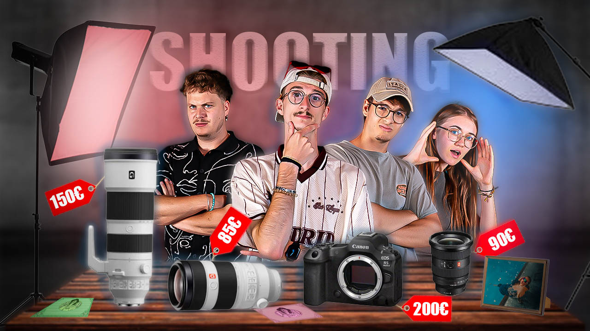

Présentation de mon travail vidéo
Cette page a été construite pour vous présentez les miniatures et les vidéos que j'ai eu l'occasion de créer. Différents types de vidéos (Montage et création pour Youtube, Short et réel, publicité) pour différents types de clients (influenceurs, particuliers, professionelles). En respectant vos choix et vos idées afin de créer la meilleures vidéos possible.
- Miniatures pour une meilleure identité visuelle et promouvoir votre vidéo.
- Montage et création de vidéo YouTube.
- Création de vidéo évenementiel, short, réel, publicitaire, promotion.

Mes réalisations vidéos.
Les filtres permettent de séparer rapidement les plateformes, les usages et les types de projets. L'objectif est de renforcer la lisibilité et la crédibilité du portfolio.
Une page vidéo plus crédible face aux concurrents
Au lieu d'afficher une simple liste de miniatures ou des liens éparpillés, cette page hiérarchise les contenus, rassure, valorise la qualité du montage et donne une impression plus professionnelle.
- Lecture plus fluide du portfolio
- Meilleure mise en avant des miniatures
- Possibilité de mixer contenus publics et privés
Comment ajouter tes futures vidéos
- YouTube : remplace simplement l'URL d'embed et la miniature.
- Local : dépose ton fichier MP4 dans /videos/local/.
- Miniature : remplace le poster SVG par ton JPG, PNG ou WebP.
- SEO vidéo : garde un vrai titre, une vraie description et une miniature soignée.
Conseil : si une vidéo sert aussi ton référencement, garde-la bien visible sur une page dédiée avec un vrai titre, du texte autour, une miniature propre et une place importante dans la page.